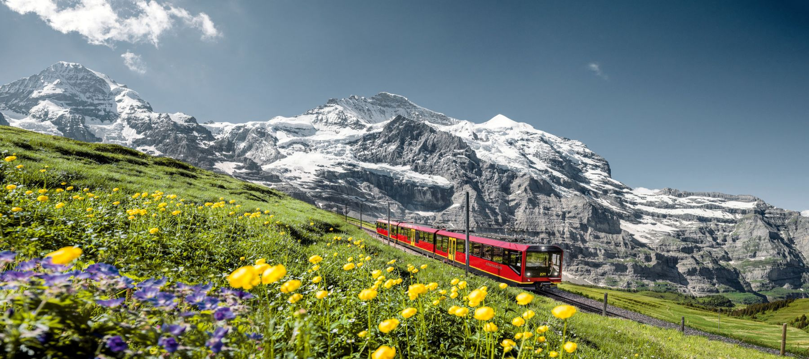

Alpii elvetieni

Jungfrau este unul dintre cei mai renumiti munti din Elvetia. Are altitudinea de 4.158 m, fiind al treilea munte ca inaltime din Alpii Bernezi. Impreuna cu muntii Eiger si Mönch formeaza un trio muntos marcant.
Alpii elvetieni reprezinta una dintre cele mai populare destinatii din Elvetia pentru turisti. Muntii masivi Mönch, Eiger si Jungfrau domina peisajul. Sate fermecatoare precum Mürren si Gimmelwald se agata de stanci, cu vedere la frumoasa Vale Lauterbrunnen. Telecabinele duc vizitatorii pana la cele mai inalte varfuri de munte, iar traseele de drumetii leaga orasele mici si ofera privelisti alpine uimitoare.
Experienta mea
Pentru multi vizitatori, alpii elvetieni reprezinta punctul culminant al unei calatorii in Elvetia, iar noi nu suntem altfel. Ne-a distrus toate asteptarile si permiteti-mi sa va spun ca asteptarile noastre au fost foarte mari.
Am fost cazati in Franta, la Evian, langa Geneva. De acolo am vizitat Chamonix, am mers prin tunelul Mont Blanc si apoi in Aosta, italia si in Courmayeur.
In a patra zi am plecat din Lauterbrunnen cu trenul pana pe Jungfrau. A fost cea mai frumoasa zi din mini-vacanta. Privelistile spectaculoase, satele linistite si animalele care pasteau au creat un tablou senzational. Cu siguranta ma voi intoarce aici si cine stie, poate data viitoare voi reusi sa urc mai mult, fara ajutorul trenului.
 Cel mai periculos aeroport din lume
Cel mai periculos aeroport din lume